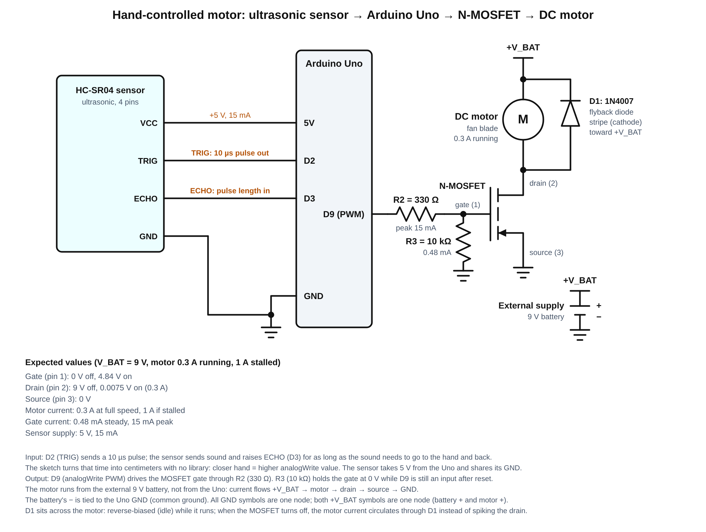
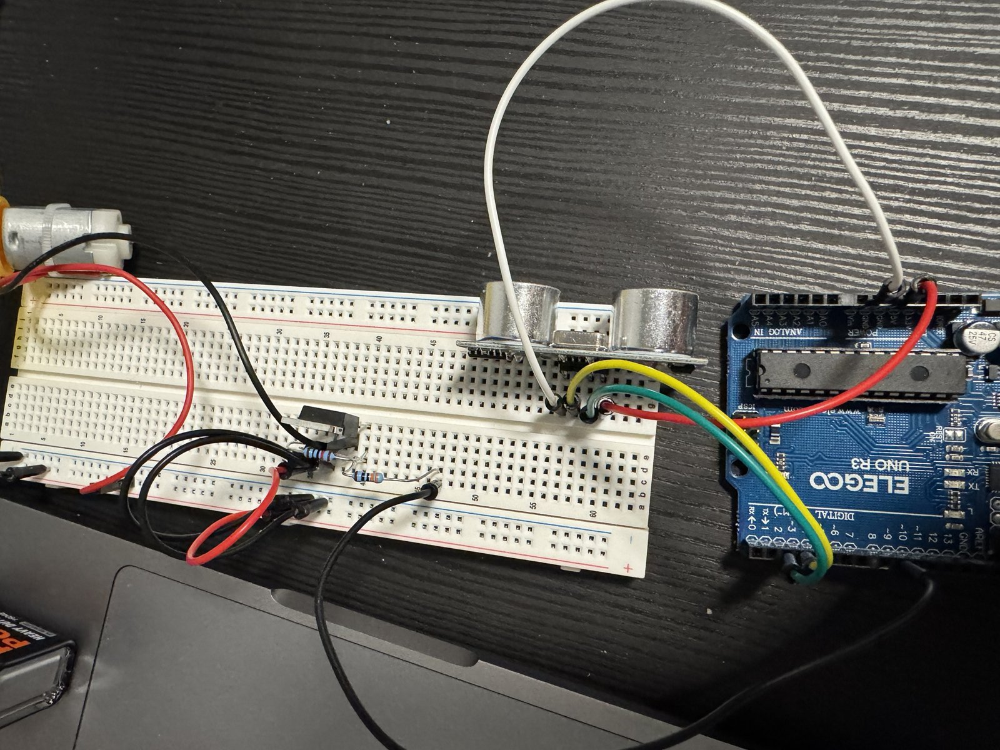
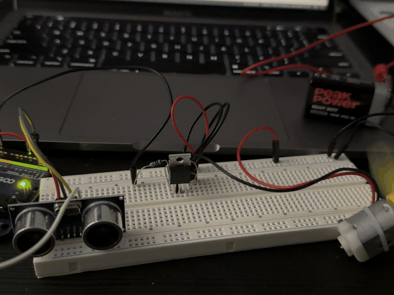
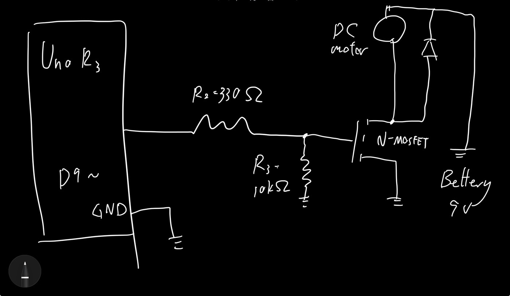
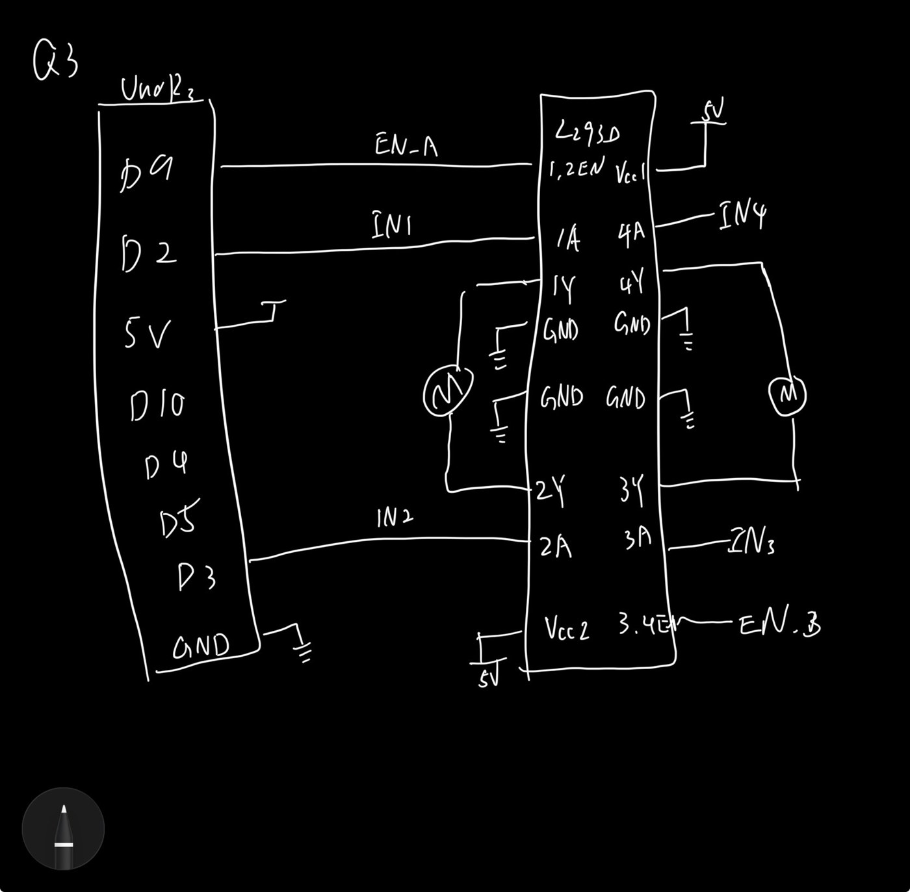

Assignment 5: Hand-Controlled Motor
An HC-SR04 ultrasonic sensor measures the distance to my hand: the closer the hand, the faster a DC motor with a fan blade spins. The motor is switched by an N-MOSFET (IRLZ44N) and runs from an external 9 V battery. No library is used.
1. Schematic

2. Circuit

3. Firmware
Download: hand_motor.ino.
// Input: HC-SR04 ultrasonic distance sensor, read without a library. Output: a DC motor switched by an N-MOSFET (IRLZ44N) from an external 9 V battery.
// The closer my hand is to the sensor, the faster the motor spins (analogWrite PWM on the MOSFET gate).
// Pin wired to the sensor's TRIG pin: a 10 microsecond HIGH pulse starts one measurement
const int TRIG_PIN = 2;
// Pin wired to the sensor's ECHO pin: it is HIGH for as long as the sound needs to travel to my hand and back
const int ECHO_PIN = 3;
// PWM pin (marked ~ on the Uno) wired through gate resistor R2 (330 ohm) to the MOSFET gate
const int GATE_PIN = 9;
// Hand closer than this (in cm) gives full speed
const int NEAR_CM = 5;
// Hand farther than this (in cm) gives motor off
const int FAR_CM = 50;
// setup() runs once when the Arduino powers up or resets
void setup() {
// Open the serial connection to the computer at 9600 baud
Serial.begin(9600);
// TRIG is an OUTPUT so the Arduino can send the trigger pulse
pinMode(TRIG_PIN, OUTPUT);
// ECHO is an INPUT (high impedance): the Arduino only listens to the sensor here
pinMode(ECHO_PIN, INPUT);
// Before this line the gate pin is an INPUT (high impedance, not driving anything), so the 10 kOhm pull-down R3 holds the gate at 0 V
// pinMode(OUTPUT) makes the pin drive the gate; it starts LOW (0 V), so the MOSFET is off and the motor is stopped
pinMode(GATE_PIN, OUTPUT);
}
// loop() runs over and over forever after setup() finishes
void loop() {
// Start a measurement: TRIG goes HIGH ...
digitalWrite(TRIG_PIN, HIGH);
// ... for 10 microseconds ...
delayMicroseconds(10);
// ... and back to LOW
digitalWrite(TRIG_PIN, LOW);
// Measure how long ECHO stays HIGH, in microseconds; gives up after 30000 us (about 5 m) and returns 0
long echoUs = pulseIn(ECHO_PIN, HIGH, 30000);
// Without an echo (nothing in front of the sensor) assume the hand is far away
int distanceCm = FAR_CM;
// If an echo did come back
if (echoUs > 0) {
// Sound needs about 58 microseconds per cm for the round trip, so divide by 58 to get cm
distanceCm = echoUs / 58;
}
// Map the distance to a speed: FAR_CM gives 0, NEAR_CM gives 255 (closer = faster)
int speedValue = map(distanceCm, FAR_CM, NEAR_CM, 0, 255);
// Keep the value between 0 and 255 so analogWrite gets a legal value (map() does not clamp)
speedValue = constrain(speedValue, 0, 255);
// Send the PWM duty cycle to the MOSFET gate: duty = speedValue / 255 of the time the gate is 5 V
analogWrite(GATE_PIN, speedValue);
// Print the label for the distance
Serial.print("distance = ");
// Print the distance in cm
Serial.print(distanceCm);
// Print the unit and the label for the PWM value
Serial.print(" cm | analogWrite = ");
// Print the analogWrite value and finish the line
Serial.println(speedValue);
// Wait 100 ms before the next measurement (about 10 per second)
delay(100);
}
4. Circuit operation

Serial Monitor output from my circuit:
distance = 30 cm | analogWrite = 113
distance = 20 cm | analogWrite = 170
distance = 16 cm | analogWrite = 192
distance = 13 cm | analogWrite = 209
distance = 7 cm | analogWrite = 243The closer the hand, the larger the analogWrite value and the higher the PWM duty cycle on the gate. At 50 cm or more the value is 0 (motor off); at 5 cm or less it is 255 (full speed).
5. Calculations(original hand draft in the folder)
R2 (gate resistor): I_peak = 5 V / 330 Ω = 15.2 mA, below the 20 mA recommended per Uno pin.
R3 (pull-down): V_gate = 5 V × 10 000 / (10 000 + 330) = 4.84 V, above the IRLZ44N’s 1–2 V threshold; I = 5 V / 10 330 Ω = 0.48 mA.
Transistor current vs. maximum: my motor draws 0.3 A running and 1 A stalled. The IRLZ44N’s maximum continuous drain current is 41 A, so I use 0.3 / 41 = 0.7 % of it (2.4 % stalled). It blocks 9 V against a 55 V rating.
MOSFET drop and heat (RDS(on) = 0.025 Ω at a 5 V gate): V_DS = 0.3 A × 0.025 Ω = 0.0075 V; P = 0.3² × 0.025 = 0.0023 W, so no heatsink is needed.
PWM: duty = analogWrite / 255, average motor voltage = duty × 9 V. At 20 cm: map(20, 50, 5, 0, 255) = (20 − 50) × 255 / (5 − 50) = 170, duty 170 / 255 = 66.7 %, about 6.0 V.
Sensor: 5 V, 15 mA from the Uno’s 5V pin; distance = echo time / 58 (cm), e.g. 1160 µs → 20 cm.
| Point | Motor off (analogWrite(0)) | Motor full (analogWrite(255)) |
|---|---|---|
| D9 | 0 V | 5 V |
| Gate (pin 1) | 0 V, 0 mA | 4.84 V, 0.48 mA |
| Drain (pin 2) | 9 V | 0.0075 V |
| Source (pin 3) | 0 V | 0 V |
| Motor | 0 V, 0 A | 8.99 V, 0.3 A |
pinMode(). After reset every pin is an INPUT (high impedance, driving nothing), so R3 holds the gate at 0 V. pinMode(GATE_PIN, OUTPUT) makes D9 drive the gate; it starts LOW, so the motor stays off. pinMode(TRIG_PIN, OUTPUT) lets D2 send the trigger pulse, and pinMode(ECHO_PIN, INPUT) makes D3 listen to the echo.
6. Additional questions
Q1. Maximum current between pins 2 and 3 of the MOSFET
Pins 2 and 3 are drain and source. The IRLZ44N datasheet gives a maximum continuous drain current of 41 A at 25 °C case temperature (29 A at 100 °C).
Q2. Schematic: Arduino, DC motor, flyback diode

| Schematic part | Part I could use | Datasheet numbers that matter here |
|---|---|---|
| N-MOSFET Q1 | IRLZ44N (logic level) | 55 V, 41 A, RDS(on) 0.025 Ω at 5 V gate, VGS(th) 1–2 V. Datasheet |
| DC motor M1 | Mabuchi FA-130 (sold by Pololu as item #77, now discontinued) | Rated 1.5–3 V, 12 300 rpm with no load at 3 V, stall current 2.1 A. Product page |
| Flyback diode D1 | 1N4007 | Reverse voltage 1000 V, average forward current 1 A, surge current 30 A, forward voltage up to 1.1 V at 1 A. Datasheet (Vishay) |
| R2, R3 | Ordinary ¼ W resistors, 330 Ω and 10 kΩ | Same roles and values as in the main circuit; no part-specific datasheet needed. |
| Supply | 9 V battery | As drawn; this 3 V motor would need a lower supply (2 × AA) or a low PWM duty cycle. |
The motor’s worst case (stall, 2.1 A) is far below the MOSFET’s 41 A.
Q3. Schematic and pseudocode: L293D with two motors

| Arduino pin | Name | L293D pin | Purpose |
|---|---|---|---|
| D9 | EN_A | 1 (1,2EN) | enable / speed, motor A |
| D2 | IN1 | 2 (1A) | direction, motor A |
| D3 | IN2 | 7 (2A) | direction, motor A |
| D10 | EN_B | 9 (3,4EN) | enable / speed, motor B |
| D4 | IN3 | 10 (3A) | direction, motor B |
| D5 | IN4 | 15 (4A) | direction, motor B |
// pseudocode (not compiled)
constants: EN_A = 9, IN1 = 2, IN2 = 3, EN_B = 10, IN3 = 4, IN4 = 5
setup:
set EN_A, IN1, IN2, EN_B, IN3, IN4 as OUTPUT
EN_A = HIGH, EN_B = HIGH // both motors enabled (use analogWrite on these two pins for speed)
motorA_forward: IN1 = HIGH, IN2 = LOW
motorA_back: IN1 = LOW, IN2 = HIGH
motorB_forward: IN3 = HIGH, IN4 = LOW
motorB_back: IN3 = LOW, IN4 = HIGH
stop_both: IN1 = IN2 = IN3 = IN4 = LOW
loop:
motorA_forward; motorB_forward; wait 2 s // both forward
stop_both; wait 0.5 s // brief stop before reversing
motorA_back; motorB_back; wait 2 s // both back
stop_both; wait 0.5 s
motorA_forward; motorB_back; wait 2 s // one forward, one back
stop_both; wait 0.5 s
motorA_back; motorB_forward; wait 2 s // one back, one forward
stop_both; wait 0.5 s7. Use of AI tools
<Yes. I used Claude (Anthropic’s AI assistant) on this assignment. Claude helped me with:
- explaining how to calculate the distance using the ultrasonic sensor
- I wrote the original sketch myself and used Claude to check those values and help me build the the circuit from my hand drawn version
Reflection: AI helped me understand the concepts, but I still checked the resistor math against Ohm's law and tested the circuit on the breadboard It really helped me debug my code and circuit.